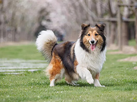

Pet Adoption Day
Learn MoreThomas the Corgi
Pembroke
Welsh Corgi

Thomas is a Pembroke Welsh Corgi. He is happy, alert, and very playful. He is a great pet for people of all ages. He is intelligent and willing to please. He is housed trained and knows how to shake, roll over, and fetch. He is a good watchdog and will either be very noisy or very cautious with strangers.
Adopt NowZiva the Shetland Sheepdog
Shetland Sheepdog
Ziva is a good-natured dog, and she is very eager to please. Shelties are easy to train. She will make an amazing playmate for children and can sometimes be timid and standoffish with strangers. She has a big and beautiful coat that requires daily grooming. She will make a great addition to your home.
Adopt NowLady and Luna
Cavalier King Charles Spaniels

It may be in their nature to chase birds, but they are also happy taking long walks in the woods or just hanging out with their loving humans. Animated, intuitive, and generally cheerful, these small dogs make wonderful therapy pets. Cavaliers do well in families with older children who will play outside with them and give them much-needed exercise. We are asking that Lady and Luna be adopted together.
Adopt Now